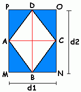

A tua tarefa é desenhar um losango, constituído unicamente pelos caracteres '.' e '#'. O losango é determinado por um número indicando o tamanho do seu centro. Por exemplo, um losango de tamanho 5 corresponde à seguinte figura:..#.. -> menos dois cardinais que a linha a seguir .###. -> menos dois cardinais que a linha central ##### -> 5 cardinais (losango de tamanho 5) .###. -> menos dois cardinais que a linha central ..#.. -> menos dois cardinais que a linha anterior
Se N for o tamanho do losango, Todas as linhas do losango devem conter exactamente N caracteres. A linha central do losango deve conter N cardinais, a linhas exactamente a seguir e a linha imediatamente anterior deve conter menos dois cardinais que a central, contendo mais dois pontos (que indicam "espaços") e assim sucessivamente até chegarmos a uma linha contendo unicamente um cardinal.
Olha para a figura para perceberes como formar o losango e nota que obviamente, o número N tem de ser ímpar.
O input é constituído por uma linha contendo um único número N (3 ≤ N ≤ 99), que corresponde ao tamanho da linha central do losango a desenhar. É garantido que o número dado é ímpar.
O output deve conter tantas linhas quantas as necessárias para desenhar o losango no formato descrito atrás, ou seja, com cardinais e pontos.
| Input | Output |
|---|---|
3 |
.#. ### .#. |
| Input | Output |
|---|---|
7 |
...#... ..###.. .#####. ####### .#####. ..###.. ...#... |
Conteúdo de Fernando Silva (DCC/FCUP), migrado de dcc.fc.up.pt/~fds/aulas/EDados/2526/praticas/problems/prob120.html.